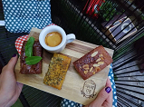

Каталог ресторанів
Інформація про ресторани міста
| Зображення | Назва | Локація | Страви | Опис | Кухня |
|---|---|---|---|---|---|
|  | Замарстинів Плаза | Замарстинів | М'ясо гриль, Фалафель, Бастурма, Салат Цезар | У розпорядженні гостей кілька залів, які розмістилися на двох рівнях закладу. Для проведення бенкетів обладнаний зал місткістю до 50 гостей. Крім того, у ресторані є окремий VIP зал, зал «Кіно Парк» з сучасним обладнанням для перегляду кінострічок. Після 23.00 в закладі працює зона «Party Place», де проходять танцювальні й тематичні вечірки. Меню ресторану... | Українська |
| Перша кляса | Личаків | Борщ, Фалафель, Цибулева зупа, Салат Цезар | Паб «Добрий друг» зустрічає гостей на вулиці Івана Федорова у Львові. Головною особливістю пабу є широкий асортимент крафтового пива від кращих українських броварень. За барною стойкою встановлено 24 крани з розливним пінним, що оновлюються майже щодня. Також у барному меню є сидр, наливки, коктейлі. Основу меню складають популярні страви європейської кухні в авторській інтерпретації шеф-кухаря. Гостям подають холодні й гарячі закуски, бургери, піцу з різними начинками на чорних та класичних осн. | Українська |